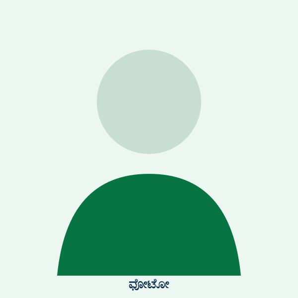

ಶ್ರೀಮತಿ ಜ್ಯೋತಿ ಎಲ್ ಭಂಡಾರಿ
ಮುಖ್ಯೋಪಾಧ್ಯಾಯರು
ನಮ್ಮ ವಿದ್ಯಾರ್ಥಿಗಳ ಬೆಳವಣಿಗೆಗೆ ಸಮರ್ಪಿತ ಶಿಕ್ಷಕರ ತಂಡ.

ಮುಖ್ಯೋಪಾಧ್ಯಾಯರು
ಗಣಿತ ಶಿಕ್ಷಕರು
ಗಣಿತ ಶಿಕ್ಷಕರು
ಹಿಂದಿ ಶಿಕ್ಷಕರು
ದೈಹಿಕ ಶಿಕ್ಷಕರು
ವಿಜ್ಞಾನ ಶಿಕ್ಷಕರು
ಚಿತ್ರಕಲೆ ಶಿಕ್ಷಕರು
ಸಂಸ್ಕ್ರತ ಶಿಕ್ಷಕರು
ಸಮಾಜ ವಿಜ್ಞಾನ ಶಿಕ್ಷಕರು
ಕನ್ನಡ ಶಿಕ್ಷಕರು
ದ್ವಿತೀಯ ದರ್ಜೆ ಸಹಾಯಕರು